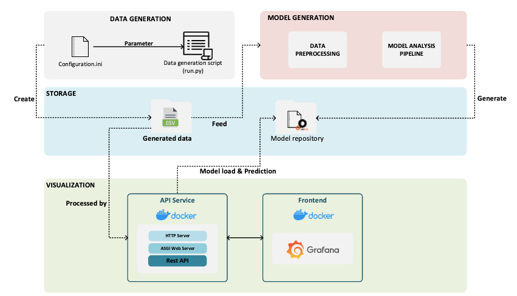
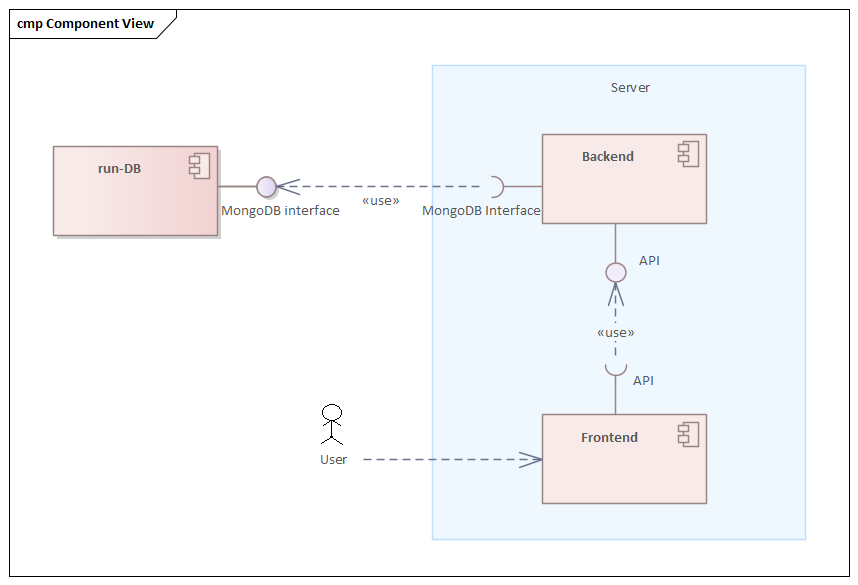
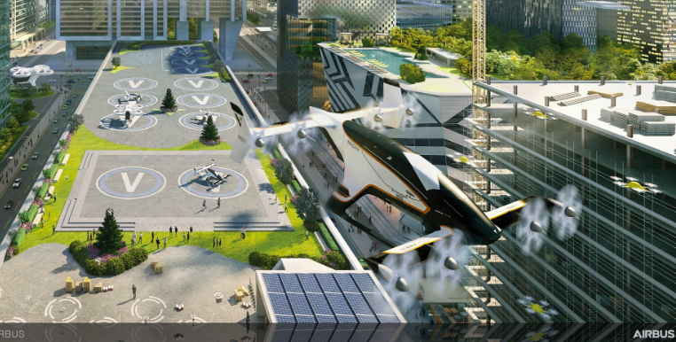

Backend development and testing for a data-driven system that helps electricity network operators analyze power quality and congestion in lower-level grids. Developed during my EngD traineeship in collaboration with company CGI.
Role: Backend Developer & Test Manager

System architecture showing data generation, machine learning pipeline, API services, and Grafana-based visualization.
Developed a full-stack data platform for scientists working with experimental data from the SND@LHC detector at CERN. The goal was to create a user-friendly interface that enables researchers to access, explore, and analyze Large Hadron Collider experiment data efficiently. The system was built using the FARM stack.
Role: Software Designer & Backend Developer

Full-stack platform built with the FARM stack to enable researchers to interact with data from the SND@LHC experiment at CERN.
Developed a 3D simulation environment to train autonomous quadcopters using reinforcement learning. The goal was to enable drones to navigate urban environments autonomously while avoiding collisions and finding optimal flight trajectories. The project was conducted in collaboration with Airbus during an 8-week development cycle.
Role: Software Developer

Unity-based simulation environment used to train reinforcement learning agents for autonomous quadcopter flight.